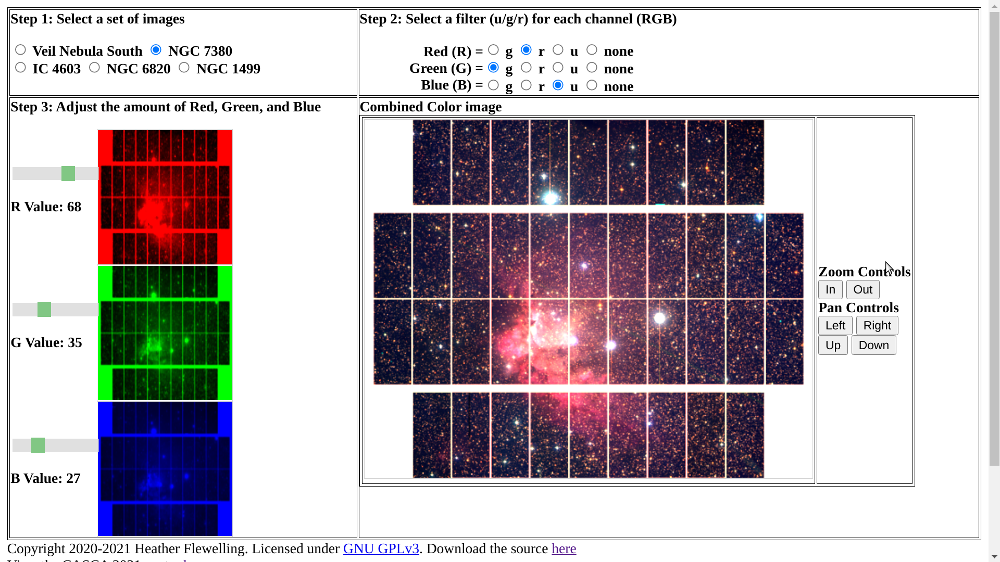

CFHT data analysis in a web browser - webtools for the Mauna Kea Scholars program
Heather Flewelling (heather@cfht.hawaii.edu), Mary Beth Laychak, Nadine Manset -- Canada-France-Hawaii Telescope
Best viewed on a laptop / full screen, or download the pdf or png
{kind=link}
The Mauna Kea Scholars program ( https://maunakeascholars.org, see also Manset's poster: https://www.cfht.hawaii.edu/~manset/UM2022/UM2022-MKS-Manset.html), started in 2015, provides research opportunities for high school students in Hawai'i to use the telescopes on Mauna Kea. These students work with astronomy mentors (mostly graduate students, but also astronomers working with the observatories), to write proposals for telescope time.
Over 100 students have received telescope time since the start of the program.
It is a steep learning curve to learn how to analyze astronomical data, often requiring specialized software and a background in programming. These skills are often needed even for
very basic tasks such as opening a fits file or viewing a spectra, and can act as a barrier to high school students who have an interest in science but do not yet have the computer
background. Another barrier is that many of the students have chromebooks, which makes it impossible to run typical astronomy software. We have created a couple of webtools to
make CFHT's data more accessible to high school students. These tools are written in html5 and javascript, and can be easily viewed on chromebooks and mobile devices.
For images, we have a 'colorizer' that allows one to create color images using a preset collection of different fields observed in different filters, for a set of publicly available Pan-
STARRS images and CFHT MegaCam images. The mentor can clone the github page and change the images to use the student's telescope images, making this a very simplified
way to view FITS files. The student can pan and zoom the images, choose the filters to view, and adjust the intensity, and also create color images.
For students interested in exploring CFHT ESPaDOnS spectra, we have a javascript webtool that allows one to load up to 2 spectra, and to examine (pan, zoom, scale) the spectra.
The student can find the min, max for a set range, and overlay known spectral lines for Hydrogen and other elements.
Both of these webtools are written in html5 and javascript, and can be used with any modern browser. These tools work on mobile devices as well as on chromebooks. They are hosted on github to make it easy to clone/modify, and have a GPL3 license. They can be found at https://www.cfht.hawaii.edu/~heather

4 easy steps
|
Features
|
For more information on how the MegaCam Colorizer works (under the hood), see the 2021 CASCA Poster
How to install
|
Request
Let Heather Flewelling (heather@cfht.hawaii.edu) know what you think!
|

How to use
|
Based on observations obtained with MegaPrime/MegaCam, a joint project of CFHT and CEA/DAPNIA, at the Canada-France-Hawaii Telescope (CFHT) which is operated by the National Research Council (NRC) of Canada, the Institut National des Sciences de l'Univers of the Centre National de la Recherche Scientifique (CNRS) of France, and the University of Hawaii. The observations at the CFHT were performed with care and respect from the summit of Maunakea which is a significant cultural and historic site. This research used the facilities of the Canadian Astronomy Data Centre operated by the National Research Council of Canada with the support of the Canadian Space Agency.
ESPaDOnS Spectrum Viewer: https://heatherflew.github.io/mks_espadons/espadonsviewer.html Megacam Colorizer: https://heatherflew.github.io/astro_outreach/, Pan-STARRS Colorizer: https://heatherflew.github.io/ps1astroday
Links to the source code
Megacam Colorizer source:https://github.com/heatherflew/astro_outreach,ESPaDOnS Spectrum Viewer source:https://github.com/heatherflew/mks_espadons